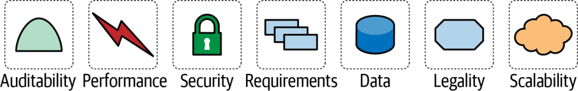
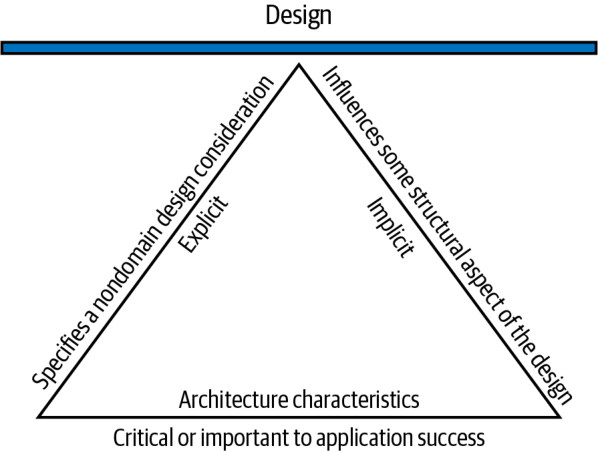

اکنون به جزئیاتِ طراحی ساختاری (structural design) میپردازیم که یکی از نقشهای کلیدیِ معمارانِ نرمافزار است. این کار عمدتاً از دو فعالیت تشکیل میشود: تحلیلِ ویژگیهای معماری، که در این فصل به آن میپردازیم، و طراحیِ مؤلفههای منطقی، که در فصل ۸ بررسی میشود. معماران میتوانند این دو فعالیت را به هر ترتیبی (یا حتی بهموازات هم) انجام دهند، اما این دو در یک نقطهٔ اتصال (join point) حیاتی به هم میرسند.
وقتی شرکتی تصمیم میگیرد مسئلهٔ معینی را با نرمافزار حل کند، فهرستی از الزاماتِ آن سیستم گرد میآورد (برای استخراجِ این الزامات فنونِ بسیاری وجود دارد که در فصل ۸ به آنها پرداختهایم). در سراسرِ کتاب، از این الزامات با عنوانِ حوزهٔ مسئله (problem domain) —یا فقط «حوزه»— یاد میکنیم. در فصل ۱ دیدید که ویژگیهای معماری آن جنبههای مهمی از سیستماند که از حوزهٔ مسئله مستقلاند و برای موفقیتِ سیستم اهمیت دارند. در این فصل، تعریفِ این اصطلاح و نیز ویژگیهای معماریِ مشخص را عمیقتر بررسی میکنیم.
معماران اغلب در تعریفِ حوزه همکاری میکنند، اما همچنین باید همهٔ کارهایی را که نرمافزار باید انجام دهد و مستقیماً به کارکردهای حوزه مربوط نیست، تعریف، کشف و به هر شکلِ دیگر تحلیل کنند: همان ویژگیهای معماری. نقشِ معماران در تعریفِ ویژگیهای معماری بخشی از چیزی است که معماری نرمافزار را از کدنویسی و طراحی متمایز میکند. آنان همچنین باید هنگامِ طراحیِ یک راهکارِ نرمافزاری عواملِ بسیارِ دیگری را در نظر بگیرند، همانطور که در شکل ۴-۱ نشان داده شده است.

ماندگاریِ اصطلاحِ «الزاماتِ غیرکارکردی»
بسیاری از سازمانها ویژگیهای معماری را با اصطلاحاتِ گوناگونی توصیف میکنند، از جمله الزاماتِ غیرکارکردی (non-functional requirements)؛ اصطلاحی که برای تمایزِ ویژگیهای معماری از الزاماتِ کارکردی (functional requirements) ساخته شد. ما این اصطلاح را نمیپسندیم، چون خودکوچکانگارانه است و از نظرِ زبانی اثری منفی دارد: چگونه میتوان تیمها را قانع کرد که به چیزی «غیرکارکردی» بهاندازهٔ کافی توجه کنند؟ اصطلاحِ رایجِ دیگر صفاتِ کیفی (quality attributes) است که آن را هم نمیپسندیم، چون بیشتر ارزیابیِ کیفیت پس از وقوع را القا میکند تا طراحی را.
ما اصطلاحِ ویژگیهای معماری را ترجیح میدهیم، چون دغدغههایی را توصیف میکند که برای موفقیتِ معماری —و در نتیجه کلِ سیستم— حیاتیاند، بیآنکه از اهمیتِ این دغدغهها بکاهد. در کتابِ Head First Software Architecture (O’Reilly، ۲۰۲۴)، از ویژگیهای معماری با عنوانِ قابلیتهای (capabilities) سیستم یاد میکنیم؛ در مقابل، حوزه نمایانگرِ رفتارِ (behavior) سیستم است.
گاهی اصطلاحات «گیر میکنند»، و الزاماتِ غیرکارکردی ظاهراً در میانِ معمارانِ نرمافزار از آن اصطلاحاتِ بسیار چسبنده است. این اصطلاح هنوز در بسیاری از سازمانها رایج است. نخستین بار در اواخرِ دههٔ ۱۹۷۰ در ادبیاتِ مهندسیِ نرمافزار پیدا شد، تقریباً همزمان با تحلیلِ نقاطِ کارکردی (function point analysis): فنی برای برآورد که الزاماتِ سیستم را به «نقاطِ کارکردی» تجزیه میکند و هر نقطه نمایانگرِ واحدی از کار است. از نظرِ نظری، تیمها میتوانستند در پایانِ فرایندِ تحلیل همهٔ نقاطِ کارکردی را جمع بزنند و دیدی نسبت به پروژه به دست آورند. متأسفانه این روش فقط لایهای ظاهری از قطعیت فراهم میکرد، اما مانندِ بسیاری از طرحهای برآورد گرفتارِ ذهنیگرایی بود و دیگر به کار نمیرود.
با این حال، یک بینش از آن دوران با ما مانده است: بخشِ بزرگی از تلاشی که برای ساختنِ یک سیستم صرف میشود، به قابلیتهای آن سیستم مربوط است و نه به الزاماتش. آنان این تلاشها را نقاطِ غیرکارکردی (non-function points) نامیدند و همین باعث شد اصطلاحِ الزاماتِ غیرکارکردی رواج یابد.
یک الزام برای آنکه ویژگیِ معماری به شمار آید، باید سه ملاک را برآورده کند: باید ملاحظهای طراحیِ غیرحوزهای (nondomain) را مشخص کند، بر جنبهای ساختاری از طراحی اثر بگذارد، و برای موفقیتِ برنامه حیاتی یا مهم باشد. این اجزای درهمتنیدهٔ تعریفِ ما در شکل ۴-۲ نشان داده شدهاند که از همین سه جزء و چند قیدِ تکمیلی تشکیل شده است.

بیایید این اجزا را دقیقتر بررسی کنیم:
ویژگیِ معماری، ملاحظهای طراحیِ غیرحوزهای را مشخص میکند.
طراحیِ ساختاری در معماری نرمافزار از دو فعالیتِ معمار تشکیل میشود: درکِ حوزهٔ مسئله و کشفِ اینکه سیستم برای موفقیت به پشتیبانی از چه نوع قابلیتهایی نیاز دارد. ملاحظاتِ طراحیِ حوزه رفتارِ سیستم را پوشش میدهند و ویژگیهای معماری قابلیتها را تعریف میکنند. این دو فعالیت روی هم، طراحیِ ساختاری را تعریف میکنند.
در حالی که الزاماتِ طراحی مشخص میکنند برنامه چه کاری باید انجام دهد، ویژگیهای معماری مشخص میکنند الزامات چگونه پیادهسازی شوند و چرا انتخابهای معینی صورت گرفته است؛ خلاصه آنکه، ملاکهای عملیاتی و طراحی برای موفقیتِ پروژه را تعیین میکنند.
برای نمونه، سطوحِ مشخصی از کارایی اغلب ویژگیِ معماریِ مهمی است، اما اغلب در اسنادِ الزامات نمیآید. نکتهٔ مرتبطتر اینکه هیچ سندِ الزاماتی عملاً نمیگوید طراحی باید «از بدهی فنی جلوگیری کند»، اما این یک ملاحظهٔ طراحیِ رایج است. این تمایزِ میانِ ویژگیهای صریح و نامشهود را در «استخراجِ ویژگیهای معماری از دغدغههای حوزه» (صفحهٔ ۶۷) بهتفصیل بررسی میکنیم.
ویژگیِ معماری بر جنبهای ساختاری از طراحی اثر میگذارد.
دلیلِ اصلیِ اینکه معماران میکوشند ویژگیهای معماریِ پروژهها را توصیف کنند، بیرونکشیدنِ ملاحظاتِ مهمِ طراحی است. آیا معمار میتواند آن را از راهِ طراحی پیاده کند، یا این ویژگیِ معماری برای موفقیت به ملاحظهٔ ساختاریِ ویژهای نیاز دارد؟
برای نمونه، امنیت (security) تقریباً در هر پروژهای دغدغه است و همهٔ سیستمها باید در طراحی و کدنویسی برخی احتیاطهای پایه را رعایت کنند. با این حال، امنیت زمانی به سطحِ یک ویژگیِ معماری میرسد که معمار تشخیص دهد معماری برای پشتیبانی از آن به ساختارِ ویژهای نیاز دارد.
دو ویژگیِ معماریِ رایج را در نظر بگیرید: امنیت و مقیاسپذیری. معماران میتوانند در یک سیستمِ تکپارچه با رعایتِ بهداشتِ خوبِ کدنویسی (coding hygiene)، از جمله فنونِ شناختهشدهای مانندِ رمزنگاری (encryption)، درهمسازی (hashing) و نمکزنی (salting)، امنیت را تأمین کنند. (توابع برازشِ معماری، که آنها نیز زیرِ همین چتر قرار میگیرند، در فصل ۶ بررسی میشوند.) در مقابل، در یک معماریِ توزیعشده (distributed architecture) مانندِ میکروسرویسها، معمار سرویسی مقاومتر با پروتکلهای دسترسیِ سختگیرانهتر میسازد: رویکردی ساختاری. بنابراین، معماران میتوانند امنیت را یا از راهِ طراحی تأمین کنند یا از راهِ ساختار. از سوی دیگر، مقیاسپذیری را در نظر بگیرید: هیچ میزانی از طراحیِ هوشمندانه به معماریِ تکپارچه اجازه نمیدهد از نقطهای معین فراتر مقیاسپذیر باشد. فراتر از آن نقطه، سیستم باید به سبکِ معماریِ توزیعشده تغییر کند.
معماران به ویژگیهای عملیاتیِ معماری (operational architectural characteristics) توجهِ ویژهای دارند (که در «ویژگیهای عملیاتیِ معماری» در صفحهٔ ۵۹ بررسی میشوند)، چون اینها ویژگیهایی هستند که بیش از همه به پشتیبانیِ ساختاریِ ویژه نیاز دارند.
ویژگیِ معماری باید برای موفقیتِ برنامه حیاتی یا مهم باشد.
برنامهها میتوانند از شمارِ عظیمی از ویژگیهای معماری پشتیبانی کنند… اما نباید چنین کنند. هر ویژگیِ معماریای که سیستم از آن پشتیبانی میکند، بر پیچیدگیِ طراحیاش میافزاید. به همین دلیل معماران باید بکوشند کمترین شمارِ ممکن از ویژگیهای معماری را برگزینند، نه بیشترین را.
ما ویژگیهای معماری را به ویژگیهای نامشهود و صریح (explicit) تقسیم میکنیم. ویژگیهای نامشهود بهندرت در الزامات میآیند، اما برای موفقیتِ پروژه ضروریاند. در دسترسبودن، قابلیتِ اطمینان (reliability) و امنیت زیربنای تقریباً همهٔ برنامهها هستند، اما بهندرت در اسنادِ طراحی تصریح میشوند. معماران باید از دانشِ خود دربارهٔ حوزهٔ مسئله بهره بگیرند تا این ویژگیهای معماری را در مرحلهٔ تحلیل کشف کنند. برای نمونه، یک شرکتِ معاملاتِ پربسامد (high-frequency trading) شاید نیازی نداشته باشد تأخیرِ (latency) پایین را در تکتکِ سیستمها تصریح کند، چون معمارانِ آن حوزهٔ مسئله از پیش میدانند این ویژگی چقدر حیاتی است. ویژگیهای صریحِ معماری در اسنادِ الزامات یا دیگر دستورالعملهای مشخص میآیند.
در شکل ۴-۲، انتخابِ مثلث عامدانه است: هر یک از اجزای تعریف از بقیه پشتیبانی میکند و آنها نیز به نوبهٔ خود از طراحیِ کلیِ سیستم پشتیبانی میکنند. تکیهگاهی که مثلث پدید میآورد نشان میدهد این ویژگیهای معماری اغلب چگونه بر یکدیگر اثر میگذارند. به همین دلیل است که معماران اینقدر از اصطلاحِ مصالحه استفاده میکنند.
| واژهٔ انگلیسی | معادل مصوب/بهکاررفته در این بخش |
|---|---|
| Structural Design | طراحی ساختاری |
| Join Point | نقطهٔ اتصال |
| Problem Domain | حوزهٔ مسئله |
| Non-Functional Requirements | الزامات غیرکارکردی |
| Functional Requirements | الزامات کارکردی |
| Quality Attributes | صفات کیفی |
| Capabilities | قابلیتها |
| Behavior | رفتار |
| Function Point Analysis | تحلیل نقاط کارکردی |
| Non-Function Points | نقاط غیرکارکردی |
| Nondomain | غیرحوزهای |
| Security | امنیت |
| Coding Hygiene | بهداشت کدنویسی |
| Encryption | رمزنگاری |
| Hashing | درهمسازی |
| Salting | نمکزنی |
| Distributed Architecture | معماری توزیعشده |
| Operational Architectural Characteristics | ویژگیهای عملیاتی معماری |
| Explicit Architecture Characteristic | ویژگی صریح معماری |
| Reliability | قابلیت اطمینان |
| High-Frequency Trading | معاملات پربسامد |
| Latency | تأخیر |